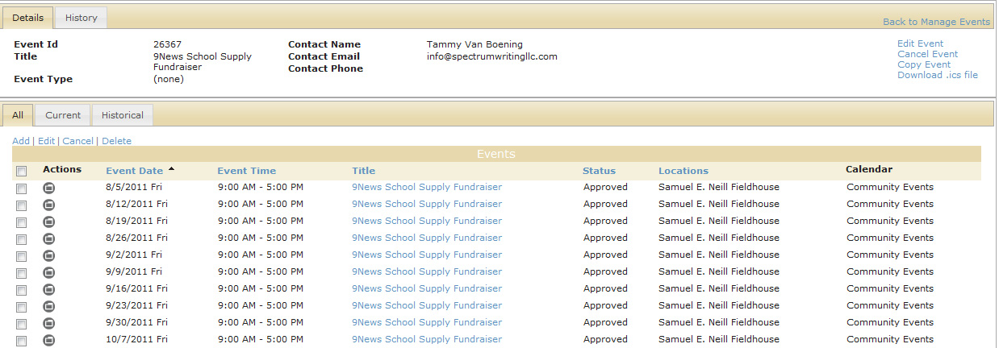

From the Manage Events page, or the Edit icon on the Event Details page, the Event Summary page opens. The Details tab on this page summarizes the current details for the event. The History tab on this page shows the history for the event. In addition, the page has three tabs that show the dates that are associated with the event.
Event Summary page, Details tab

You can manage an event from the Event Summary page as follows: